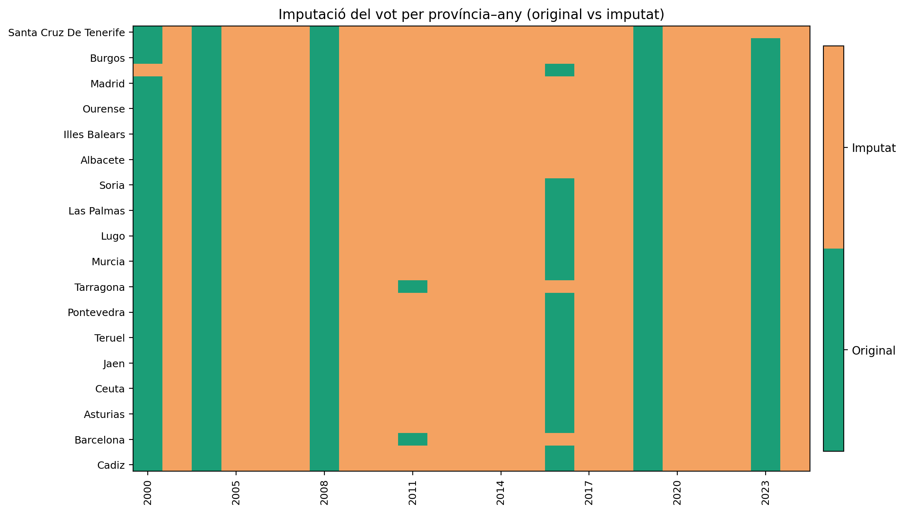
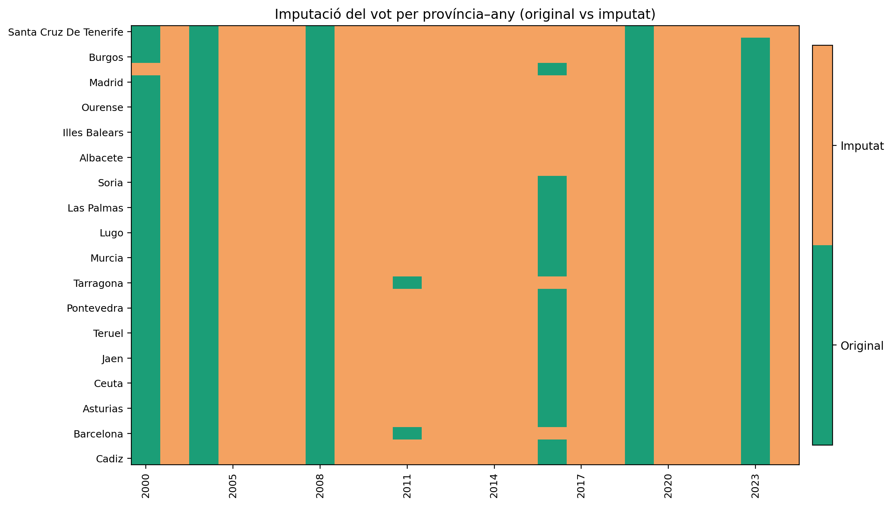
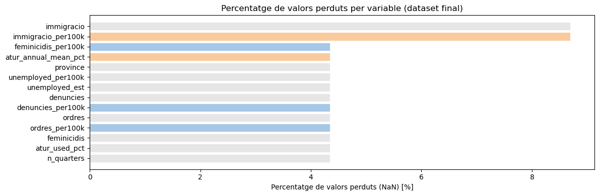

| variable | n_missing | pct_missing | |
|---|---|---|---|
| 0 | immigracio | 104 | 8.70 |
| 1 | immigracio_per100k | 104 | 8.70 |
| 2 | feminicidis_per100k | 52 | 4.35 |
| 3 | atur_annual_mean_pct | 52 | 4.35 |
| 4 | province | 52 | 4.35 |
| 5 | unemployed_per100k | 52 | 4.35 |
| 6 | unemployed_est | 52 | 4.35 |
| 7 | denuncies | 52 | 4.35 |
| 8 | denuncies_per100k | 52 | 4.35 |
| 9 | ordres | 52 | 4.35 |
| year | province | total_votes | votes_edreta | source_file | |
|---|---|---|---|---|---|
| 0 | 2000 | Almeria | 278462 | 487 | Vots extrema dreta 2000.xlsx |
| 1 | 2000 | Cadiz | 553667 | 1001 | Vots extrema dreta 2000.xlsx |
| 2 | 2000 | Cordoba | 461695 | 419 | Vots extrema dreta 2000.xlsx |
| 3 | 2000 | Granada | 480242 | 378 | Vots extrema dreta 2000.xlsx |
| 4 | 2000 | Huelva | 245452 | 311 | Vots extrema dreta 2000.xlsx |
Shape: (364, 5)
Columns: ['year', 'province', 'total_votes', 'votes_edreta', 'source_file']Backup creat: C:\Users\bfeli\3 BBDD inicials\originals\Excels\Eleccions\merged_votes_edreta.bak.csv
Columns abans: ['year', 'province', 'total_votes', 'votes_edreta', 'source_file']
Columna 'source_file' eliminada.
Fitxer guardat a: C:\Users\bfeli\3 BBDD inicials\originals\Excels\Eleccions\merged_votes_edreta.csv
Variable 'merged' actualitzada. Composició: (364, 4)Fitxer processat: Denuncies.xlsx
Files input: 22 Files output: 1144
Parcial desat a: C:\Users\bfeli\3 BBDD inicials\originals\Excels\partials_individuals\Denuncies_long.csv| year | province | value | source_file | metric | |
|---|---|---|---|---|---|
| 0 | 2003 | Almeria | 12780.0 | Denuncies.xlsx | denuncies |
| 1 | 2004 | Almeria | 13770.0 | Denuncies.xlsx | denuncies |
| 2 | 2005 | Almeria | 10490.0 | Denuncies.xlsx | denuncies |
| 3 | 2006 | Almeria | 26660.0 | Denuncies.xlsx | denuncies |
| 4 | 2007 | Almeria | 22980.0 | Denuncies.xlsx | denuncies |
| 5 | 2008 | Almeria | 24810.0 | Denuncies.xlsx | denuncies |
| 6 | 2009 | Almeria | 26040.0 | Denuncies.xlsx | denuncies |
| 7 | 2010 | Almeria | 27520.0 | Denuncies.xlsx | denuncies |
| 8 | 2011 | Almeria | 23570.0 | Denuncies.xlsx | denuncies |
| 9 | 2012 | Almeria | 21230.0 | Denuncies.xlsx | denuncies |
| 10 | 2013 | Almeria | 20790.0 | Denuncies.xlsx | denuncies |
| 11 | 2014 | Almeria | 20840.0 | Denuncies.xlsx | denuncies |
--- Processant: Denuncies.xlsx
OK -> partial: C:\Users\bfeli\3 BBDD inicials\originals\Excels\partials_individuals\Denuncies_long.csv
--- Processant: Ordres.xlsx
OK -> partial: C:\Users\bfeli\3 BBDD inicials\originals\Excels\partials_individuals\Ordres_long.csv
Informe desat a: C:\Users\bfeli\3 BBDD inicials\originals\Excels\partials_individuals\process_report_individuals.csv| file | rows_input | cols_input | rows_output | metric | drop_meta_cols | partial_saved | partial_shape | |
|---|---|---|---|---|---|---|---|---|
| 0 | Denuncies.xlsx | 22 | 53 | 1144 | denuncies | True | C:\Users\bfeli\3 BBDD inicials\originals\Excel... | (1144, 3) |
| 1 | Ordres.xlsx | 22 | 53 | 1144 | ordres | True | C:\Users\bfeli\3 BBDD inicials\originals\Excel... | (1144, 3) |
Parcials dir: C:\Users\bfeli\3 BBDD inicials\originals\Excels\partials_individuals existeix: True
Parcials arxius (mostra): ['Denuncies_long.csv', 'FE_denuncies_per100k_votes_params.csv', 'FE_feminicidis_per100k_votes_params.csv', 'FE_ordres_per100k_votes_params.csv', 'Ordres_long.csv', 'atur_annual_by_province_unweighted.csv', 'atur_annual_unweighted.csv', 'dataset_imputed_bayes.csv', 'dataset_locf_2024.csv', 'dataset_no2000.csv', 'dataset_no2000_no2024.csv', 'dataset_original.csv', 'debug_pop_atur_merge_sample.csv', 'denuncies_results.csv', 'feminicidis_long.csv', 'feminicidis_results.csv', 'forest_combined_votes_per100k_table.csv', 'immigracio_long.csv', 'imputed_interp_somevars.csv', 'imputed_iterative_rates_all_metrics_by_province_year_unified_final_recomputed_rates.csv', 'imputed_rates_all_metrics_by_province_year_unified_final_recomputed_rates.csv', 'inspect_summary.csv', 'missing_pct_overall.csv', 'missing_summary_chosen_file.csv', 'ordres_results.csv', 'percent_change_2023_2024_immigracio.csv', 'poblacio_long.csv', 'population_imputed_linear.csv', 'population_imputed_linear_with_province.csv', 'population_imputed_national_growth.csv', 'preview_top1_dataset_locf_2024_csv.csv', 'preview_top1_rates_all_metrics_by_province_year_unified_final_recomputed_rates_csv.csv', 'preview_top2_dataset_original_csv.csv', 'preview_top2_rates_all_metrics_by_province_year_unified_fixed_csv.csv', 'preview_top3_processed_dataset_original_csv.csv', 'preview_top3_rates_all_metrics_by_province_year_unified_fixed_voteslocf_csv.csv', 'process_report_individuals.csv', 'processed_dataset_no2000.csv', 'processed_dataset_no2024.csv', 'processed_dataset_original.csv']
\Vista de Denuncies_long.csv| year | province | value | |
|---|---|---|---|
| 0 | 2003 | Almeria | 12780.0 |
| 1 | 2004 | Almeria | 13770.0 |
| 2 | 2005 | Almeria | 10490.0 |
| 3 | 2006 | Almeria | 26660.0 |
| 4 | 2007 | Almeria | 22980.0 |
| 5 | 2008 | Almeria | 24810.0 |
| 6 | 2009 | Almeria | 26040.0 |
| 7 | 2010 | Almeria | 27520.0 |
| 8 | 2011 | Almeria | 23570.0 |
| 9 | 2012 | Almeria | 21230.0 |
| 10 | 2013 | Almeria | 20790.0 |
| 11 | 2014 | Almeria | 20840.0 |
File: C:\Users\bfeli\3 BBDD inicials\originals\Excels\feminicidis.xlsx
Vista prèvia (header=None) (primeres 12 files):| 0 | 1 | 2 | 3 | 4 | 5 | 6 | 7 | 8 | 9 | 10 | 11 | 12 | 13 | 14 | 15 | 16 | 17 | 18 | 19 | 20 | 21 | 22 | |
|---|---|---|---|---|---|---|---|---|---|---|---|---|---|---|---|---|---|---|---|---|---|---|---|
| 0 | Provincia | 2003 | 2004 | 2005 | 2006 | 2007 | 2008 | 2009 | 2010 | 2011 | 2012 | 2013 | 2014 | 2015 | 2016 | 2017 | 2018 | 2019 | 2020 | 2021 | 2022 | 2023 | 2024 |
| 1 | Almeria | 1 | 2 | 2 | 3 | 1 | 1 | 3 | 5 | 6 | 0 | 1 | 2 | 2 | 0 | 3 | 2 | 1 | 0 | 1 | 1 | 1 | 2 |
| 2 | Cadiz | 3 | 3 | 0 | 1 | 0 | 3 | 1 | 1 | 1 | 0 | 1 | 2 | 0 | 0 | 0 | 0 | 1 | 3 | 2 | 0 | 3 | 0 |
| 3 | Cordoba | 1 | 4 | 1 | 2 | 1 | 1 | 1 | 1 | 1 | 0 | 2 | 1 | 1 | 0 | 0 | 0 | 4 | 1 | 0 | 1 | 1 | 0 |
| 4 | Granada | 1 | 4 | 1 | 5 | 0 | 2 | 2 | 2 | 3 | 1 | 1 | 2 | 2 | 1 | 2 | 5 | 1 | 2 | 1 | 2 | 2 | 1 |
| 5 | Huelva | 0 | 1 | 0 | 0 | 1 | 0 | 2 | 1 | 0 | 0 | 0 | 0 | 0 | 1 | 0 | 1 | 1 | 0 | 0 | 0 | 1 | 0 |
| 6 | Jaen | 3 | 0 | 0 | 3 | 1 | 0 | 0 | 0 | 2 | 2 | 2 | 0 | 1 | 0 | 0 | 1 | 2 | 1 | 1 | 0 | 1 | 0 |
| 7 | Malaga | 2 | 1 | 3 | 4 | 1 | 2 | 5 | 3 | 2 | 2 | 3 | 4 | 4 | 1 | 0 | 2 | 4 | 0 | 2 | 3 | 4 | 5 |
| 8 | Sevilla | 2 | 4 | 2 | 3 | 3 | 0 | 2 | 4 | 2 | 2 | 1 | 0 | 4 | 2 | 2 | 1 | 1 | 3 | 2 | 4 | 3 | 2 |
| 9 | Huesca | 0 | 0 | 1 | 0 | 0 | 1 | 0 | 0 | 0 | 0 | 0 | 0 | 0 | 0 | 0 | 2 | 0 | 0 | 1 | 0 | 0 | 0 |
| 10 | Teruel | 1 | 0 | 0 | 0 | 1 | 0 | 0 | 0 | 0 | 0 | 0 | 0 | 0 | 0 | 0 | 0 | 0 | 0 | 0 | 0 | 0 | 0 |
| 11 | Zaragoza | 1 | 2 | 3 | 1 | 1 | 0 | 0 | 2 | 2 | 1 | 2 | 0 | 1 | 3 | 0 | 2 | 1 | 0 | 1 | 2 | 1 | 1 |
capçalera=0 -> comptador columnes: 23; detectades year-columnes (mostra): ['2003', '2004', '2005', '2006', '2007', '2008', '2009', '2010']
mostra columnes (primeres 12): ['Provincia', '2003', '2004', '2005', '2006', '2007', '2008', '2009', '2010', '2011', '2012', '2013']| Provincia | 2003 | 2004 | 2005 | 2006 | 2007 | 2008 | 2009 | 2010 | 2011 | 2012 | 2013 | 2014 | 2015 | 2016 | 2017 | 2018 | 2019 | 2020 | 2021 | 2022 | 2023 | 2024 | |
|---|---|---|---|---|---|---|---|---|---|---|---|---|---|---|---|---|---|---|---|---|---|---|---|
| 0 | Almeria | 1 | 2 | 2 | 3 | 1 | 1 | 3 | 5 | 6 | 0 | 1 | 2 | 2 | 0 | 3 | 2 | 1 | 0 | 1 | 1 | 1 | 2 |
| 1 | Cadiz | 3 | 3 | 0 | 1 | 0 | 3 | 1 | 1 | 1 | 0 | 1 | 2 | 0 | 0 | 0 | 0 | 1 | 3 | 2 | 0 | 3 | 0 |
| 2 | Cordoba | 1 | 4 | 1 | 2 | 1 | 1 | 1 | 1 | 1 | 0 | 2 | 1 | 1 | 0 | 0 | 0 | 4 | 1 | 0 | 1 | 1 | 0 |
| 3 | Granada | 1 | 4 | 1 | 5 | 0 | 2 | 2 | 2 | 3 | 1 | 1 | 2 | 2 | 1 | 2 | 5 | 1 | 2 | 1 | 2 | 2 | 1 |
capçalera=1 -> comptador columnes: 23; detectades year-columnes (mostra): []
mostra columnes (primeres 12): ['Almeria', 1, 2, '2.1', 3, '1.1', '1.2', '3.1', 5, 6, 0, '1.3']| Almeria | 1 | 2 | 2.1 | 3 | 1.1 | 1.2 | 3.1 | 5 | 6 | 0 | 1.3 | 2.2 | 2.3 | 0.1 | 3.2 | 2.4 | 1.4 | 0.2 | 1.5 | 1.6 | 1.7 | 2.5 | |
|---|---|---|---|---|---|---|---|---|---|---|---|---|---|---|---|---|---|---|---|---|---|---|---|
| 0 | Cadiz | 3 | 3 | 0 | 1 | 0 | 3 | 1 | 1 | 1 | 0 | 1 | 2 | 0 | 0 | 0 | 0 | 1 | 3 | 2 | 0 | 3 | 0 |
| 1 | Cordoba | 1 | 4 | 1 | 2 | 1 | 1 | 1 | 1 | 1 | 0 | 2 | 1 | 1 | 0 | 0 | 0 | 4 | 1 | 0 | 1 | 1 | 0 |
| 2 | Granada | 1 | 4 | 1 | 5 | 0 | 2 | 2 | 2 | 3 | 1 | 1 | 2 | 2 | 1 | 2 | 5 | 1 | 2 | 1 | 2 | 2 | 1 |
| 3 | Huelva | 0 | 1 | 0 | 0 | 1 | 0 | 2 | 1 | 0 | 0 | 0 | 0 | 0 | 1 | 0 | 1 | 1 | 0 | 0 | 0 | 1 | 0 |
capçalera=2 -> comptador columnes: 23; detectades year-columnes (mostra): []
mostra columnes (primeres 12): ['Cadiz', 3, '3.1', 0, 1, '0.1', '3.2', '1.1', '1.2', '1.3', '0.2', '1.4']| Cadiz | 3 | 3.1 | 0 | 1 | 0.1 | 3.2 | 1.1 | 1.2 | 1.3 | 0.2 | 1.4 | 2 | 0.3 | 0.4 | 0.5 | 0.6 | 1.5 | 3.3 | 2.1 | 0.7 | 3.4 | 0.8 | |
|---|---|---|---|---|---|---|---|---|---|---|---|---|---|---|---|---|---|---|---|---|---|---|---|
| 0 | Cordoba | 1 | 4 | 1 | 2 | 1 | 1 | 1 | 1 | 1 | 0 | 2 | 1 | 1 | 0 | 0 | 0 | 4 | 1 | 0 | 1 | 1 | 0 |
| 1 | Granada | 1 | 4 | 1 | 5 | 0 | 2 | 2 | 2 | 3 | 1 | 1 | 2 | 2 | 1 | 2 | 5 | 1 | 2 | 1 | 2 | 2 | 1 |
| 2 | Huelva | 0 | 1 | 0 | 0 | 1 | 0 | 2 | 1 | 0 | 0 | 0 | 0 | 0 | 1 | 0 | 1 | 1 | 0 | 0 | 0 | 1 | 0 |
| 3 | Jaen | 3 | 0 | 0 | 3 | 1 | 0 | 0 | 0 | 2 | 2 | 2 | 0 | 1 | 0 | 0 | 1 | 2 | 1 | 1 | 0 | 1 | 0 |
capçalera=3 -> comptador columnes: 23; detectades year-columnes (mostra): []
mostra columnes (primeres 12): ['Cordoba', 1, 4, '1.1', 2, '1.2', '1.3', '1.4', '1.5', '1.6', 0, '2.1']| Cordoba | 1 | 4 | 1.1 | 2 | 1.2 | 1.3 | 1.4 | 1.5 | 1.6 | 0 | 2.1 | 1.7 | 1.8 | 0.1 | 0.2 | 0.3 | 4.1 | 1.9 | 0.4 | 1.10 | 1.11 | 0.5 | |
|---|---|---|---|---|---|---|---|---|---|---|---|---|---|---|---|---|---|---|---|---|---|---|---|
| 0 | Granada | 1 | 4 | 1 | 5 | 0 | 2 | 2 | 2 | 3 | 1 | 1 | 2 | 2 | 1 | 2 | 5 | 1 | 2 | 1 | 2 | 2 | 1 |
| 1 | Huelva | 0 | 1 | 0 | 0 | 1 | 0 | 2 | 1 | 0 | 0 | 0 | 0 | 0 | 1 | 0 | 1 | 1 | 0 | 0 | 0 | 1 | 0 |
| 2 | Jaen | 3 | 0 | 0 | 3 | 1 | 0 | 0 | 0 | 2 | 2 | 2 | 0 | 1 | 0 | 0 | 1 | 2 | 1 | 1 | 0 | 1 | 0 |
| 3 | Malaga | 2 | 1 | 3 | 4 | 1 | 2 | 5 | 3 | 2 | 2 | 3 | 4 | 4 | 1 | 0 | 2 | 4 | 0 | 2 | 3 | 4 | 5 |
Utilitzant province_col = Provincia
Mostra year-columnes: ['2003', '2004', '2005', '2006', '2007', '2008', '2009', '2010', '2011', '2012']
Parcial desat a: C:\Users\bfeli\3 BBDD inicials\originals\Excels\partials_individuals\feminicidis_long.csv
Estructura de la sortida: (1144, 3)| province | year | value | |
|---|---|---|---|
| 0 | Almeria | 2003 | 1 |
| 1 | Cadiz | 2003 | 3 |
| 2 | Cordoba | 2003 | 1 |
| 3 | Granada | 2003 | 1 |
| 4 | Huelva | 2003 | 0 |
| 5 | Jaen | 2003 | 3 |
| 6 | Malaga | 2003 | 2 |
| 7 | Sevilla | 2003 | 2 |
| 8 | Huesca | 2003 | 0 |
| 9 | Teruel | 2003 | 1 |
| 10 | Zaragoza | 2003 | 1 |
| 11 | Asturias | 2003 | 2 |
Estructura: (1144, 3)
Years mostra: ['2003', '2004', '2005', '2006', '2007', '2008', '2009', '2010', '2011', '2012']
Provinces mostra (primeres 10): ['A Coruña', 'Alacant', 'Albacete', 'Almeria', 'Araba', 'Asturias', 'Avila', 'Badajoz', 'Barcelona', 'Bizkaia']
Valors perduts a 'value': 0| province | year | value | |
|---|---|---|---|
| 1132 | Lugo | 2024 | 1 |
| 1133 | Ourense | 2024 | 0 |
| 1134 | Pontevedra | 2024 | 2 |
| 1135 | Madrid | 2024 | 4 |
| 1136 | Murcia | 2024 | 1 |
| 1137 | Navarra | 2024 | 0 |
| 1138 | Araba | 2024 | 0 |
| 1139 | Bizkaia | 2024 | 1 |
| 1140 | Gipuzkoa | 2024 | 1 |
| 1141 | La Rioja | 2024 | 1 |
| 1142 | Ceuta | 2024 | 0 |
| 1143 | Melilla | 2024 | 0 |
Lectura: C:\Users\bfeli\3 BBDD inicials\originals\Excels\immigracio.xlsx
Utilitzant province_col = Provincia
Mostra year columnes: ['2003', '2004', '2005', '2006', '2007', '2008', '2009', '2010', '2011', '2012']
Parcial desat a: C:\Users\bfeli\3 BBDD inicials\originals\Excels\partials_individuals\immigracio_long.csv
Estructura de sortida: (1092, 3)| province | year | value | |
|---|---|---|---|
| 0 | Albacete | 2003 | 13318 |
| 1 | Alacant | 2003 | 245883 |
| 2 | Almeria | 2003 | 56276 |
| 3 | Araba | 2003 | 10445 |
| 4 | Asturias | 2003 | 19691 |
| 5 | Avila | 2003 | 3514 |
| 6 | Badajoz | 2003 | 7167 |
| 7 | Illes Balears | 2003 | 126505 |
| 8 | Barcelona | 2003 | 398459 |
| 9 | Bizkaia | 2003 | 23908 |
| 10 | Burgos | 2003 | 10908 |
| 11 | Caceres | 2003 | 10718 |
Arxiu: C:\Users\bfeli\3 BBDD inicials\originals\Excels\poblacio.xlsx
Vista (header=None) prèvia (primeres 8 files):| 0 | 1 | 2 | 3 | 4 | 5 | 6 | 7 | 8 | 9 | 10 | 11 | 12 | 13 | 14 | 15 | 16 | 17 | 18 | 19 | 20 | 21 | 22 | |
|---|---|---|---|---|---|---|---|---|---|---|---|---|---|---|---|---|---|---|---|---|---|---|---|
| 0 | Provincia | 2024 | 2023 | 2022 | 2021 | 2020 | 2019 | 2018 | 2017 | 2016 | 2015 | 2014 | 2013 | 2012 | 2011 | 2010 | 2009 | 2008 | 2007 | 2006 | 2005 | 2004 | 2003 |
| 1 | Albacete | 389070 | 387529 | 385967 | 386726 | 387838 | 387818 | 388948 | 390225 | 391865 | 394012 | 396017 | 399093 | 401590 | 400847 | 399448 | 397881 | 394521 | 389127 | 383458 | 379276 | 374717 | 370383 |
| 2 | Alacant | 1993289 | 1955268 | 1907494 | 1887036 | 1877627 | 1855384 | 1839319 | 1836715 | 1837873 | 1838578 | 1848236 | 1852733 | 1853209 | 1844439 | 1840085 | 1836134 | 1817519 | 1766320 | 1713934 | 1661660 | 1602174 | 1542318 |
| 3 | Almeria | 760964 | 753364 | 739541 | 730430 | 724003 | 714123 | 707319 | 704871 | 700055 | 694051 | 690750 | 692434 | 689320 | 686448 | 680484 | 673042 | 659443 | 642797 | 627719 | 603215 | 577427 | 560655 |
| 4 | Araba | 338594 | 336308 | 333908 | 333485 | 332874 | 330104 | 327763 | 325250 | 322974 | 321541 | 320451 | 320199 | 320566 | 319846 | 317737 | 315280 | 310944 | 306475 | 302481 | 298830 | 294304 | 290746 |
| 5 | Asturias | 1009599 | 1006060 | 1004960 | 1012117 | 1018053 | 1021469 | 1027091 | 1033550 | 1040407 | 1049328 | 1058560 | 1067425 | 1074304 | 1075877 | 1077103 | 1076280 | 1071081 | 1065291 | 1063488 | 1062755 | 1062408 | 1062320 |
| 6 | Avila | 160463 | 159764 | 159102 | 158898 | 158819 | 159237 | 160104 | 161782 | 163669 | 165694 | 167265 | 169373 | 171365 | 172771 | 173370 | 173818 | 173290 | 170206 | 167950 | 166166 | 164651 | 163549 |
| 7 | Badajoz | 666029 | 666049 | 667851 | 671092 | 672045 | 673384 | 675742 | 679042 | 682970 | 686250 | 688697 | 690889 | 691842 | 689902 | 687745 | 684391 | 680675 | 674169 | 668510 | 664407 | 659640 | 656228 |
capçalera=0 -> columnes comptador: 23; detectades year-columns mostra: [2003, 2004, 2005, 2006, 2007, 2008, 2009, 2010]
Mostra de columnes (primeres 12): ['Provincia', 2024, 2023, 2022, 2021, 2020, 2019, 2018, 2017, 2016, 2015, 2014]| Provincia | 2024 | 2023 | 2022 | 2021 | 2020 | 2019 | 2018 | 2017 | 2016 | 2015 | 2014 | 2013 | 2012 | 2011 | 2010 | 2009 | 2008 | 2007 | 2006 | 2005 | 2004 | 2003 | |
|---|---|---|---|---|---|---|---|---|---|---|---|---|---|---|---|---|---|---|---|---|---|---|---|
| 0 | Albacete | 389070 | 387529 | 385967 | 386726 | 387838 | 387818 | 388948 | 390225 | 391865 | 394012 | 396017 | 399093 | 401590 | 400847 | 399448 | 397881 | 394521 | 389127 | 383458 | 379276 | 374717 | 370383 |
| 1 | Alacant | 1993289 | 1955268 | 1907494 | 1887036 | 1877627 | 1855384 | 1839319 | 1836715 | 1837873 | 1838578 | 1848236 | 1852733 | 1853209 | 1844439 | 1840085 | 1836134 | 1817519 | 1766320 | 1713934 | 1661660 | 1602174 | 1542318 |
| 2 | Almeria | 760964 | 753364 | 739541 | 730430 | 724003 | 714123 | 707319 | 704871 | 700055 | 694051 | 690750 | 692434 | 689320 | 686448 | 680484 | 673042 | 659443 | 642797 | 627719 | 603215 | 577427 | 560655 |
capçalera=1 -> columnes comptador: 23; detectades year-columns mostra: []
Mostra de columnes (primeres 12): ['Albacete', 389070, 387529, 385967, 386726, 387838, 387818, 388948, 390225, 391865, 394012, 396017]| Albacete | 389070 | 387529 | 385967 | 386726 | 387838 | 387818 | 388948 | 390225 | 391865 | 394012 | 396017 | 399093 | 401590 | 400847 | 399448 | 397881 | 394521 | 389127 | 383458 | 379276 | 374717 | 370383 | |
|---|---|---|---|---|---|---|---|---|---|---|---|---|---|---|---|---|---|---|---|---|---|---|---|
| 0 | Alacant | 1993289 | 1955268 | 1907494 | 1887036 | 1877627 | 1855384 | 1839319 | 1836715 | 1837873 | 1838578 | 1848236 | 1852733 | 1853209 | 1844439 | 1840085 | 1836134 | 1817519 | 1766320 | 1713934 | 1661660 | 1602174 | 1542318 |
| 1 | Almeria | 760964 | 753364 | 739541 | 730430 | 724003 | 714123 | 707319 | 704871 | 700055 | 694051 | 690750 | 692434 | 689320 | 686448 | 680484 | 673042 | 659443 | 642797 | 627719 | 603215 | 577427 | 560655 |
| 2 | Araba | 338594 | 336308 | 333908 | 333485 | 332874 | 330104 | 327763 | 325250 | 322974 | 321541 | 320451 | 320199 | 320566 | 319846 | 317737 | 315280 | 310944 | 306475 | 302481 | 298830 | 294304 | 290746 |
capçalera=2 -> columnes comptador: 23; detectades year-columns mostra: [1907494, 1955268, 1993289]
Mostra de columnes (primeres 12): ['Alacant', 1993289, 1955268, 1907494, 1887036, 1877627, 1855384, 1839319, 1836715, 1837873, 1838578, 1848236]| Alacant | 1993289 | 1955268 | 1907494 | 1887036 | 1877627 | 1855384 | 1839319 | 1836715 | 1837873 | 1838578 | 1848236 | 1852733 | 1853209 | 1844439 | 1840085 | 1836134 | 1817519 | 1766320 | 1713934 | 1661660 | 1602174 | 1542318 | |
|---|---|---|---|---|---|---|---|---|---|---|---|---|---|---|---|---|---|---|---|---|---|---|---|
| 0 | Almeria | 760964 | 753364 | 739541 | 730430 | 724003 | 714123 | 707319 | 704871 | 700055 | 694051 | 690750 | 692434 | 689320 | 686448 | 680484 | 673042 | 659443 | 642797 | 627719 | 603215 | 577427 | 560655 |
| 1 | Araba | 338594 | 336308 | 333908 | 333485 | 332874 | 330104 | 327763 | 325250 | 322974 | 321541 | 320451 | 320199 | 320566 | 319846 | 317737 | 315280 | 310944 | 306475 | 302481 | 298830 | 294304 | 290746 |
| 2 | Asturias | 1009599 | 1006060 | 1004960 | 1012117 | 1018053 | 1021469 | 1027091 | 1033550 | 1040407 | 1049328 | 1058560 | 1067425 | 1074304 | 1075877 | 1077103 | 1076280 | 1071081 | 1065291 | 1063488 | 1062755 | 1062408 | 1062320 |
Utilitzar province_col = Provincia
Year columnes mostra: ['2003', '2004', '2005', '2006', '2007', '2008', '2009', '2010', '2011', '2012']
Parcial desat a: C:\Users\bfeli\3 BBDD inicials\originals\Excels\partials_individuals\poblacio_long.csv
Estructura de sortida: (1144, 3)| province | year | value | |
|---|---|---|---|
| 0 | Albacete | 2003 | 370383 |
| 1 | Alacant | 2003 | 1542318 |
| 2 | Almeria | 2003 | 560655 |
| 3 | Araba | 2003 | 290746 |
| 4 | Asturias | 2003 | 1062320 |
| 5 | Avila | 2003 | 163549 |
| 6 | Badajoz | 2003 | 656228 |
| 7 | Illes Balears | 2003 | 883410 |
| 8 | Barcelona | 2003 | 4956072 |
| 9 | Bizkaia | 2003 | 1125115 |
| 10 | Burgos | 2003 | 352086 |
| 11 | Caceres | 2003 | 404127 |
Estructura: (1144, 3)
Years mostra: ['2003', '2004', '2005', '2006', '2007', '2008', '2009', '2010', '2011', '2012', '2013', '2014']
Provincies mostra (primeres 10): ['A Coruna', 'Alacant', 'Albacete', 'Almeria', 'Araba', 'Asturias', 'Avila', 'Badajoz', 'Barcelona', 'Bizkaia']
Valors perduts a 'value': 0| province | year | value | |
|---|---|---|---|
| 1132 | Segovia | 2024 | 156620 |
| 1133 | Sevilla | 2024 | 1968624 |
| 1134 | Soria | 2024 | 90073 |
| 1135 | Tarragona | 2024 | 861744 |
| 1136 | Teruel | 2024 | 135309 |
| 1137 | Toledo | 2024 | 743165 |
| 1138 | Valencia | 2024 | 2710808 |
| 1139 | Valladolid | 2024 | 525116 |
| 1140 | Zamora | 2024 | 166253 |
| 1141 | Zaragoza | 2024 | 987763 |
| 1142 | Ceuta | 2024 | 83179 |
| 1143 | Melilla | 2024 | 85985 |
Shape input: (4784, 3)
Columns: ['Provincia', 'Any - Trimestre', 'Percentatge']
Detectar columna de percentatge: Percentatge
Mitjanes anuals no ponderades guardades a: C:\Users\bfeli\3 BBDD inicials\originals\Excels\partials_individuals\atur_annual_unweighted.csv
year annual_mean_pct method
0 2002 10.894423 unweighted_mean
1 2003 11.128702 unweighted_mean
2 2004 10.943942 unweighted_mean
3 2005 9.610962 unweighted_mean
4 2006 8.921587 unweighted_mean
No s'ha localitzat weight_col. Ometre la mijana ponderada.
Notes:
- Mitjana no ponderada: mitjana aritmètica dels quatre trimestres existents per any.1) Restaurar 'province' en parcials *_long.csv si cal...
Cap parcial necessita restaurar la provincia.
2) Cercar i processar fitxer RAW d'atur (trimestral)...
Processing atur raw: C:\Users\bfeli\3 BBDD inicials\originals\Excels\atur.xlsx
- shape: (4784, 3)| Provincia | Any - Trimestre | Percentatge | |
|---|---|---|---|
| 0 | Albacete | 2024T4 | 11.37 |
| 1 | Albacete | 2024T3 | 9.92 |
| 2 | Albacete | 2024T2 | 10.74 |
| 3 | Albacete | 2024T1 | 13.23 |
| 4 | Albacete | 2023T4 | 12.09 |
| 5 | Albacete | 2023T3 | 9.11 |
- columnes detectades -> province: Provincia ; time: Any - Trimestre ; percent: Percentatge
Desat per provincia anual atur no ponderat a: C:\Users\bfeli\3 BBDD inicials\originals\Excels\partials_individuals\atur_annual_by_province_unweighted.csv| province_norm | year | atur_annual_mean_pct | n_quarters | sample_province | complete_year | |
|---|---|---|---|---|---|---|
| 0 | a coruna | 2002 | 12.8525 | 4 | A Coruña | True |
| 1 | a coruna | 2003 | 13.7550 | 4 | A Coruña | True |
| 2 | a coruna | 2004 | 14.5075 | 4 | A Coruña | True |
| 3 | a coruna | 2005 | 9.6325 | 4 | A Coruña | True |
| 4 | a coruna | 2006 | 8.1225 | 4 | A Coruña | True |
| 5 | a coruna | 2007 | 8.2225 | 4 | A Coruña | True |
| 6 | a coruna | 2008 | 8.9175 | 4 | A Coruña | True |
| 7 | a coruna | 2009 | 11.4700 | 4 | A Coruña | True |
| 8 | a coruna | 2010 | 13.9800 | 4 | A Coruña | True |
| 9 | a coruna | 2011 | 15.8275 | 4 | A Coruña | True |
| 10 | a coruna | 2012 | 18.3800 | 4 | A Coruña | True |
| 11 | a coruna | 2013 | 20.1800 | 4 | A Coruña | True |
Resultat desat a partials_individuals/atur_annual_by_province_unweighted.csv
Executar el pipeline de càlcul de rates per100k amb la seguretat que 'province' existeix en els parcials.Fitxer de població carregat: poblacio_long.csv shape: (1144, 3)
Atur arxiu carregat: atur_annual_by_province_unweighted.csv shape: (1196, 6)
Columnes de població i tipus de dades:
province object
year int64
value int64
dtype: object
Atur columnes i tipus:
province_norm object
year int64
atur_annual_mean_pct float64
n_quarters int64
sample_province object
complete_year bool
dtype: object
\Mostra de població (primeres files):
province year value
0 Albacete 2003 370383
1 Alacant 2003 1542318
2 Almeria 2003 560655
3 Araba 2003 290746
4 Asturias 2003 1062320
Atur mostra (primeres files):
province_norm year atur_annual_mean_pct n_quarters sample_province complete_year
0 a coruna 2002 12.8525 4 A Coruña True
1 a coruna 2003 13.7550 4 A Coruña True
2 a coruna 2004 14.5075 4 A Coruña True
3 a coruna 2005 9.6325 4 A Coruña True
4 a coruna 2006 8.1225 4 A Coruña True
pop years int? True, atur years int? True
Columnes year convertides a Int64.
Anys únics a pop_df (mostra): [2003, 2004, 2005, 2006, 2007, 2008, 2009, 2010, 2011, 2012, 2013, 2014, 2015, 2016, 2017, 2018, 2019, 2020, 2021, 2022]
Anys únics a atur_out (mostra): [2002, 2003, 2004, 2005, 2006, 2007, 2008, 2009, 2010, 2011, 2012, 2013, 2014, 2015, 2016, 2017, 2018, 2019, 2020, 2021]
Provincies: pop=52, atur=52, common=52
Mostra de províncies només a població (primeres 20): []
Mostra de provincies només a atur (primeres 20): []
Estructura integrada: (1144, 6)
Mostra del merged:
province year population province_norm atur_annual_mean_pct n_quarters
0 Albacete 2003 370383 albacete 7.7000 4
1 Alacant 2003 1542318 alacant 12.3375 4
2 Almeria 2003 560655 almeria 11.2950 4
3 Araba 2003 290746 araba 9.3450 4
4 Asturias 2003 1062320 asturias 11.3000 4
5 Avila 2003 163549 avila 8.9425 4
6 Badajoz 2003 656228 badajoz 16.3600 4
7 Illes Balears 2003 883410 illes balears 9.7750 4
8 Barcelona 2003 4956072 barcelona 10.8625 4
9 Bizkaia 2003 1125115 bizkaia 11.4450 4
10 Burgos 2003 352086 burgos 8.7100 4
11 Caceres 2003 404127 caceres 18.7675 4
Mostra combinada desada a: C:\Users\bfeli\3 BBDD inicials\originals\Excels\partials_individuals\debug_pop_atur_merge_sample.csvTotal de files a rates: 1144
Files de vots perduts desprès de combinació: 0
Files perdudes a 'population': 1144
Resultat desat a: C:\Users\bfeli\3 BBDD inicials\originals\Excels\partials_individuals\rates_by_province_year_votes_imputed_share_locf.csvUsing votes file: C:\Users\bfeli\3 BBDD inicials\originals\Excels\Eleccions\merged_votes_edreta.csv
Shape: (364, 4)
Columns: ['year', 'province', 'total_votes', 'votes_edreta']
year province total_votes votes_edreta
2000 Almeria 278462 487
2000 Cadiz 553667 1001
2000 Cordoba 461695 419
2000 Granada 480242 378
2000 Huelva 245452 311
2000 Jaen 399949 397
Columnes detectades -> province: province year: year votes: votes_edreta
Saved aggregated votes by province-year to: C:\Users\bfeli\3 BBDD inicials\originals\Excels\partials_individuals\votes_by_province_year_from_merged_explicit.csv
province_norm year votes province
a coruna 2000 775 A Coruña
a coruna 2004 926 A Coruña
a coruna 2008 1128 A Coruña
a coruna 2011 0 A Coruña
a coruna 2016 0 A Coruña
a coruna 2019 27426 A Coruña
a coruna 2023 27539 A Coruña
alacant 2000 485 Alacant
alacant 2004 709 Alacant
alacant 2008 626 Alacant
alacant 2011 0 Alacant
alacant 2016 617 Alacant
Utilitzar fitxer població: C:\Users\bfeli\3 BBDD inicials\originals\Excels\partials_individuals\poblacio_long.csv
Població estructura: (1144, 3)
Població columnes: ['province', 'year', 'value']
province year value
Albacete 2003 370383
Alacant 2003 1542318
Almeria 2003 560655
Araba 2003 290746
Asturias 2003 1062320
Avila 2003 163549
Population normalized sample:
province_norm year province population
albacete 2003 Albacete 370383
alacant 2003 Alacant 1542318
almeria 2003 Almeria 560655
araba 2003 Araba 290746
asturias 2003 Asturias 1062320
avila 2003 Avila 163549
badajoz 2003 Badajoz 656228
illes balears 2003 Illes Balears 883410
barcelona 2003 Barcelona 4956072
bizkaia 2003 Bizkaia 1125115
burgos 2003 Burgos 352086
caceres 2003 Caceres 404127
Merged votes amb població: total de files 364; population found for 312; missing population for 52 rows.
Mostra de files amb població faltant (primeres 12):
province_votes province_norm year
A Coruña a coruna 2000
Alacant alacant 2000
Albacete albacete 2000
Almeria almeria 2000
Araba araba 2000
Asturias asturias 2000
Avila avila 2000
Badajoz badajoz 2000
Barcelona barcelona 2000
Bizkaia bizkaia 2000
Burgos burgos 2000
Caceres caceres 2000
Desar final merged votes+population a: C:\Users\bfeli\3 BBDD inicials\originals\Excels\partials_individuals\votes_with_population_and_rates.csv
Vista (primees 12 files):
province_norm year votes province_votes province_pop population votes_per100k
a coruna 2000 775 A Coruña NaN NaN None
a coruna 2004 926 A Coruña A Coruna 1104699.0 83.823738
a coruna 2008 1128 A Coruña A Coruna 1128599.0 99.946925
a coruna 2011 0 A Coruña A Coruna 1140069.0 0.0
a coruna 2016 0 A Coruña A Coruna 1123015.0 0.0
a coruna 2019 27426 A Coruña A Coruna 1120432.0 2447.805846
a coruna 2023 27539 A Coruña A Coruna 1123884.0 2450.34185
alacant 2000 485 Alacant NaN NaN None
alacant 2004 709 Alacant Alacant 1602174.0 44.252372
alacant 2008 626 Alacant Alacant 1817519.0 34.442556
alacant 2011 0 Alacant Alacant 1844439.0 0.0
alacant 2016 617 Alacant Alacant 1837873.0 33.571417Columnes en population_imputed_linear.csv: ['province_norm', 'year', 'population', 'imputed_population_method', 'population_source_year']
Crear 'province' des de 'province_norm' (majúscules, accents es poden perdre).
S'ha desat la població corregida a: C:\Users\bfeli\3 BBDD inicials\originals\Excels\partials_individuals\population_imputed_linear_with_province.csv
Mostra de files:
province_norm year population province
a coruna 2003 1100954.0 A Coruna
a coruna 2004 1104699.0 A Coruna
a coruna 2005 1109955.0 A Coruna
a coruna 2006 1115415.0 A Coruna
a coruna 2007 1121347.0 A Coruna
a coruna 2008 1128599.0 A Coruna
a coruna 2009 1135287.0 A Coruna
a coruna 2010 1138107.0 A Coruna
a coruna 2011 1140069.0 A Coruna
a coruna 2012 1141178.0 A CorunaDesar arxiu unificar a: C:\Users\bfeli\3 BBDD inicials\originals\Excels\partials_individuals\rates_all_metrics_by_province_year_unified_fixed.csv
Files: 1196
Columnes: ['province_norm', 'year', 'province', 'population', 'population_imputed_from_nearest', 'denuncies', 'denuncies_per100k', 'ordres', 'ordres_per100k', 'feminicidis', 'feminicidis_per100k', 'immigracio', 'immigracio_per100k', 'votes', 'votes_per100k', 'atur_annual_mean_pct', 'n_quarters', 'atur_used_pct', 'unemployed_est', 'unemployed_per100k']
Vista:
province_norm year province population population_imputed_from_nearest denuncies denuncies_per100k ordres ordres_per100k feminicidis feminicidis_per100k immigracio immigracio_per100k votes votes_per100k atur_annual_mean_pct n_quarters atur_used_pct unemployed_est unemployed_per100k
a coruna 2000 NaN 1100954.0 True NaN NaN NaN NaN NaN NaN NaN NaN 775.0 70.393495 NaN NaN NaN NaN NaN
a coruna 2003 A Coruna 1100954.0 False 12540.0 1139.012166 0.0 0.000000 3.0 0.272491 18212.0 1654.201720 0.0 0.000000 13.7550 4.0 13.7550 151436.222700 13755.0
a coruna 2004 A Coruna 1104699.0 False 13880.0 1256.450852 5420.0 490.631385 1.0 0.090522 19945.0 1805.469182 926.0 83.823738 14.5075 4.0 14.5075 160264.207425 14507.5
a coruna 2005 A Coruna 1109955.0 False 10550.0 950.488984 4060.0 365.780595 0.0 0.000000 23855.0 2149.186228 0.0 0.000000 9.6325 4.0 9.6325 106916.415375 9632.5
a coruna 2006 A Coruna 1115415.0 False 22010.0 1973.256591 6530.0 585.432328 0.0 0.000000 25468.0 2283.275731 0.0 0.000000 8.1225 4.0 8.1225 90599.583375 8122.5
a coruna 2007 A Coruna 1121347.0 False 19830.0 1768.408887 5010.0 446.784091 2.0 0.178357 28137.0 2509.214365 0.0 0.000000 8.2225 4.0 8.2225 92202.757075 8222.5
a coruna 2008 A Coruna 1128599.0 False 24020.0 2128.302435 4340.0 384.547567 2.0 0.177211 6645.0 588.783084 1128.0 99.946925 8.9175 4.0 8.9175 100642.815825 8917.5
a coruna 2009 A Coruna 1135287.0 False 24000.0 2114.002891 4050.0 356.737988 2.0 0.176167 4131.0 363.872748 0.0 0.000000 11.4700 4.0 11.4700 130217.418900 11470.0Carpeta: C:\Users\bfeli\3 BBDD inicials\originals\Excels\partials_individuals existeix: True
Trobar fitxers relacionats amb vots (nom | mida bytes | vista de les primeres files):
---- FE_denuncies_per100k_votes_params.csv | mida: 200
Unnamed: 0 coef se
votes_per100k_used -0.001462 0.001168
immigracio_per100k -0.012460 0.013322
unemployed_per100k -0.003025 0.012645
---- FE_feminicidis_per100k_votes_params.csv | mida: 206
Unnamed: 0 coef se
votes_per100k_used 7.758543e-07 1.620309e-07
immigracio_per100k 3.340548e-06 3.166263e-06
unemployed_per100k -2.874713e-06 3.209538e-06
---- FE_ordres_per100k_votes_params.csv | mida: 198
Unnamed: 0 coef se
votes_per100k_used 0.000581 0.000436
immigracio_per100k 0.012191 0.006124
unemployed_per100k 0.015046 0.004214
---- forest_combined_votes_per100k_grouped.png | mida: 73109
(No s'ha pogut visualitzar el fitxer) File is not a zip file
---- forest_combined_votes_per100k_table.csv | mida: 1770
spec coef se ci95_low ci95_high z p per1000_change_per100k change_500k_cases N N_provinces years notes model outcome label
FE_log -3.647923e+01 8.198371e+01 -1.966000e+02 123.642000 -0.445 0.657000 NaN NaN 1145 53 2003-2024 NaN NaN NaN | | FE_log
FE_log 5.855910e+01 2.749678e+01 4.231000e+00 112.887000 2.129 0.033000 NaN NaN 1145 53 2003-2024 NaN NaN NaN | | FE_log
FE_log -2.943296e-03 1.102395e-02 -2.370000e-02 0.017800 -0.267 0.789000 NaN NaN 1145 53 2003-2024 NaN NaN NaN | | FE_log
FE_votes -1.461509e-03 1.167770e-03 -3.750338e-03 0.000827 -1.252 0.210000 -1.461509 -7.307545 1145 53 2003-2024 NaN NaN NaN | | FE_votes
FE_votes 5.810832e-04 4.361602e-04 -2.737908e-04 0.001436 1.333 0.183000 0.581083 2.905415 1145 53 2003-2024 NaN NaN NaN | | FE_votes
FE_votes 7.758543e-07 1.620309e-07 4.582738e-07 0.000001 4.789 0.000002 0.000776 0.003879 1145 53 2003-2024 FE (per100k outcome) NaN NaN | | FE_votes
---- heatmap_missing_votes_per100k.png | mida: 235593
(No s'ha pogut visualitzar el fitxer) File is not a zip file
---- preview_top3_rates_all_metrics_by_province_year_unified_fixed_voteslocf_csv.csv | mida: 36153
province_norm year province population population_imputed_from_nearest denuncies denuncies_per100k ordres ordres_per100k feminicidis feminicidis_per100k immigracio immigracio_per100k votes votes_per100k atur_annual_mean_pct n_quarters atur_used_pct unemployed_est unemployed_per100k
a coruna 2000 NaN 1100954.0 True NaN NaN NaN NaN NaN NaN NaN NaN 775.0 70.393495 NaN NaN NaN NaN NaN
a coruna 2003 A Coruna 1100954.0 False 12540.0 1139.012166 0.0 0.000000 3.0 0.272491 18212.0 1654.201720 0.0 0.000000 13.7550 4.0 13.7550 151436.222700 13755.0
a coruna 2004 A Coruna 1104699.0 False 13880.0 1256.450852 5420.0 490.631385 1.0 0.090522 19945.0 1805.469182 926.0 83.823738 14.5075 4.0 14.5075 160264.207425 14507.5
a coruna 2005 A Coruna 1109955.0 False 10550.0 950.488984 4060.0 365.780595 0.0 0.000000 23855.0 2149.186228 0.0 0.000000 9.6325 4.0 9.6325 106916.415375 9632.5
a coruna 2006 A Coruna 1115415.0 False 22010.0 1973.256591 6530.0 585.432328 0.0 0.000000 25468.0 2283.275731 0.0 0.000000 8.1225 4.0 8.1225 90599.583375 8122.5
a coruna 2007 A Coruna 1121347.0 False 19830.0 1768.408887 5010.0 446.784091 2.0 0.178357 28137.0 2509.214365 0.0 0.000000 8.2225 4.0 8.2225 92202.757075 8222.5
---- processed_heatmap_missing_votes_per100k.png | mida: 235493
(No s'ha pogut visualitzar el fitxer) File is not a zip file
---- processed_missing_by_prov_votes_per100k.csv | mida: 724
province votes_per100k
A Coruna 0.0
Alacant 0.0
Las Palmas 0.0
Leon 0.0
Lleida 0.0
Lugo 0.0
---- processed_missing_by_year_votes_per100k.csv | mida: 250
year votes_per100k
2000 0.0
2003 0.0
2004 0.0
2005 0.0
2006 0.0
2007 0.0
---- rates_all_metrics_by_province_year_unified_fixed_voteslocf.csv | mida: 213812
province_norm year province population population_imputed_from_nearest denuncies denuncies_per100k ordres ordres_per100k feminicidis feminicidis_per100k immigracio immigracio_per100k votes votes_per100k atur_annual_mean_pct n_quarters atur_used_pct unemployed_est unemployed_per100k
a coruna 2000 NaN 1100954.0 True NaN NaN NaN NaN NaN NaN NaN NaN 775.0 70.393495 NaN NaN NaN NaN NaN
a coruna 2003 A Coruna 1100954.0 False 12540.0 1139.012166 0.0 0.000000 3.0 0.272491 18212.0 1654.201720 0.0 0.000000 13.7550 4.0 13.7550 151436.222700 13755.0
a coruna 2004 A Coruna 1104699.0 False 13880.0 1256.450852 5420.0 490.631385 1.0 0.090522 19945.0 1805.469182 926.0 83.823738 14.5075 4.0 14.5075 160264.207425 14507.5
a coruna 2005 A Coruna 1109955.0 False 10550.0 950.488984 4060.0 365.780595 0.0 0.000000 23855.0 2149.186228 0.0 0.000000 9.6325 4.0 9.6325 106916.415375 9632.5
a coruna 2006 A Coruna 1115415.0 False 22010.0 1973.256591 6530.0 585.432328 0.0 0.000000 25468.0 2283.275731 0.0 0.000000 8.1225 4.0 8.1225 90599.583375 8122.5
a coruna 2007 A Coruna 1121347.0 False 19830.0 1768.408887 5010.0 446.784091 2.0 0.178357 28137.0 2509.214365 0.0 0.000000 8.2225 4.0 8.2225 92202.757075 8222.5
---- rates_all_metrics_by_province_year_unified_fixed_voteslocf_final.csv | mida: 255081
province_norm year province population population_imputed_from_nearest denuncies denuncies_per100k ordres ordres_per100k feminicidis feminicidis_per100k immigracio immigracio_per100k votes votes_per100k atur_annual_mean_pct n_quarters atur_used_pct unemployed_est unemployed_per100k votes_final votes_imputed_method votes_combined votes_source_observed_count votes_imputed_flag
a coruna 2000 NaN 1100954.0 True NaN NaN NaN NaN NaN NaN NaN NaN 775.0 70.393495 NaN NaN NaN NaN NaN 775.0 observed 775.0 1 observed
a coruna 2003 A Coruna 1100954.0 False 12540.0 1139.012166 0.0 0.000000 3.0 0.272491 18212.0 1654.201720 0.0 0.000000 13.7550 4.0 13.7550 151436.222700 13755.0 775.0 locf_bfill 0.0 1 locf_bfill
a coruna 2004 A Coruna 1104699.0 False 13880.0 1256.450852 5420.0 490.631385 1.0 0.090522 19945.0 1805.469182 926.0 83.823738 14.5075 4.0 14.5075 160264.207425 14507.5 926.0 observed 926.0 1 observed
a coruna 2005 A Coruna 1109955.0 False 10550.0 950.488984 4060.0 365.780595 0.0 0.000000 23855.0 2149.186228 0.0 0.000000 9.6325 4.0 9.6325 106916.415375 9632.5 926.0 locf_bfill 0.0 1 locf_bfill
a coruna 2006 A Coruna 1115415.0 False 22010.0 1973.256591 6530.0 585.432328 0.0 0.000000 25468.0 2283.275731 0.0 0.000000 8.1225 4.0 8.1225 90599.583375 8122.5 926.0 locf_bfill 0.0 1 locf_bfill
a coruna 2007 A Coruna 1121347.0 False 19830.0 1768.408887 5010.0 446.784091 2.0 0.178357 28137.0 2509.214365 0.0 0.000000 8.2225 4.0 8.2225 92202.757075 8222.5 926.0 locf_bfill 0.0 1 locf_bfill
---- rates_all_metrics_by_province_year_unified_fixed_voteslocf_final_fixedzeros.csv | mida: 305027
province_norm year province population population_imputed_from_nearest denuncies denuncies_per100k ordres ordres_per100k feminicidis feminicidis_per100k immigracio immigracio_per100k votes votes_per100k atur_annual_mean_pct n_quarters atur_used_pct unemployed_est unemployed_per100k votes_final votes_imputed_method votes_combined votes_source_observed_count votes_imputed_flag votes_original votes_used votes_used_flag votes_per100k_used
a coruna 2000 NaN 1100954.0 True NaN NaN NaN NaN NaN NaN NaN NaN 775.0 70.393495 NaN NaN NaN NaN NaN 775.0 observed 775.0 1 observed 775.0 775.0 original 70.393495
a coruna 2003 A Coruna 1100954.0 False 12540.0 1139.012166 0.0 0.000000 3.0 0.272491 18212.0 1654.201720 0.0 0.000000 13.7550 4.0 13.7550 151436.222700 13755.0 775.0 locf_bfill 0.0 1 locf_bfill 0.0 775.0 imputed_used 70.393495
a coruna 2004 A Coruna 1104699.0 False 13880.0 1256.450852 5420.0 490.631385 1.0 0.090522 19945.0 1805.469182 926.0 83.823738 14.5075 4.0 14.5075 160264.207425 14507.5 926.0 observed 926.0 1 observed 926.0 926.0 original 83.823738
a coruna 2005 A Coruna 1109955.0 False 10550.0 950.488984 4060.0 365.780595 0.0 0.000000 23855.0 2149.186228 0.0 0.000000 9.6325 4.0 9.6325 106916.415375 9632.5 926.0 locf_bfill 0.0 1 locf_bfill 0.0 926.0 imputed_used 83.426806
a coruna 2006 A Coruna 1115415.0 False 22010.0 1973.256591 6530.0 585.432328 0.0 0.000000 25468.0 2283.275731 0.0 0.000000 8.1225 4.0 8.1225 90599.583375 8122.5 926.0 locf_bfill 0.0 1 locf_bfill 0.0 926.0 imputed_used 83.018428
a coruna 2007 A Coruna 1121347.0 False 19830.0 1768.408887 5010.0 446.784091 2.0 0.178357 28137.0 2509.214365 0.0 0.000000 8.2225 4.0 8.2225 92202.757075 8222.5 926.0 locf_bfill 0.0 1 locf_bfill 0.0 926.0 imputed_used 82.579255
---- rates_all_metrics_by_province_year_unified_fixed_voteslocf_zerosNA.csv | mida: 227573
province_norm year province population population_imputed_from_nearest denuncies denuncies_per100k ordres ordres_per100k feminicidis feminicidis_per100k immigracio immigracio_per100k votes votes_per100k atur_annual_mean_pct n_quarters atur_used_pct unemployed_est unemployed_per100k votes_final votes_combined
a coruna 2000 NaN 1100954.0 True NaN NaN NaN NaN NaN NaN NaN NaN 775.0 70.393495 NaN NaN NaN NaN NaN 775.0 775.0
a coruna 2003 A Coruna 1100954.0 False 12540.0 1139.012166 0.0 0.000000 3.0 0.272491 18212.0 1654.201720 0.0 0.000000 13.7550 4.0 13.7550 151436.222700 13755.0 775.0 0.0
a coruna 2004 A Coruna 1104699.0 False 13880.0 1256.450852 5420.0 490.631385 1.0 0.090522 19945.0 1805.469182 926.0 83.823738 14.5075 4.0 14.5075 160264.207425 14507.5 926.0 926.0
a coruna 2005 A Coruna 1109955.0 False 10550.0 950.488984 4060.0 365.780595 0.0 0.000000 23855.0 2149.186228 0.0 0.000000 9.6325 4.0 9.6325 106916.415375 9632.5 926.0 0.0
a coruna 2006 A Coruna 1115415.0 False 22010.0 1973.256591 6530.0 585.432328 0.0 0.000000 25468.0 2283.275731 0.0 0.000000 8.1225 4.0 8.1225 90599.583375 8122.5 926.0 0.0
a coruna 2007 A Coruna 1121347.0 False 19830.0 1768.408887 5010.0 446.784091 2.0 0.178357 28137.0 2509.214365 0.0 0.000000 8.2225 4.0 8.2225 92202.757075 8222.5 926.0 0.0
---- rates_by_province_year_votes_imputed_share_locf.csv | mida: 79163
province province_norm year population denuncies denuncies_per100k ordres ordres_per100k feminicidis feminicidis_per100k immigracio immigracio_per100k votes votes_per100k atur_annual_mean_pct atur_annual_weighted_pct n_quarters atur_used_pct unemployed_est unemployed_per100k
Albacete albacete 2003 NaN 0.0 NaN 0.0 NaN 0.0 NaN 0.0 NaN 0.0 NaN 7.7000 NaN 4 7.7000 NaN NaN
Alacant alacant 2003 NaN 0.0 NaN 0.0 NaN 0.0 NaN 0.0 NaN 0.0 NaN 12.3375 NaN 4 12.3375 NaN NaN
Almeria almeria 2003 NaN 0.0 NaN 0.0 NaN 0.0 NaN 0.0 NaN 0.0 NaN 11.2950 NaN 4 11.2950 NaN NaN
Araba araba 2003 NaN 0.0 NaN 0.0 NaN 0.0 NaN 0.0 NaN 0.0 NaN 9.3450 NaN 4 9.3450 NaN NaN
Asturias asturias 2003 NaN 0.0 NaN 0.0 NaN 0.0 NaN 0.0 NaN 0.0 NaN 11.3000 NaN 4 11.3000 NaN NaN
Avila avila 2003 NaN 0.0 NaN 0.0 NaN 0.0 NaN 0.0 NaN 0.0 NaN 8.9425 NaN 4 8.9425 NaN NaN
---- votes_by_province_year_from_merged_explicit.csv | mida: 10002
province_norm year votes province
a coruna 2000 775 A Coruña
a coruna 2004 926 A Coruña
a coruna 2008 1128 A Coruña
a coruna 2011 0 A Coruña
a coruna 2016 0 A Coruña
a coruna 2019 27426 A Coruña
---- votes_by_province_year_from_merged_explicit.csv | mida: 10002
province_norm year votes province
a coruna 2000 775 A Coruña
a coruna 2004 926 A Coruña
a coruna 2008 1128 A Coruña
a coruna 2011 0 A Coruña
a coruna 2016 0 A Coruña
a coruna 2019 27426 A Coruña
---- votes_imputed_interpolate.csv | mida: 75496
province_norm year province population votes_imputed imputation_method votes_per100k
a coruna 2000 A Coruña NaN 775.00 observed NaN
a coruna 2003 NaN 1100954.0 888.25 interpolated 80.680028
a coruna 2004 A Coruña 1104699.0 926.00 observed 83.823738
a coruna 2005 NaN 1109955.0 976.50 interpolated 87.976540
a coruna 2006 NaN 1115415.0 1027.00 interpolated 92.073354
a coruna 2007 NaN 1121347.0 1077.50 interpolated 96.089792
---- votes_imputed_interpolate.csv | mida: 75496
province_norm year province population votes_imputed imputation_method votes_per100k
a coruna 2000 A Coruña NaN 775.00 observed NaN
a coruna 2003 NaN 1100954.0 888.25 interpolated 80.680028
a coruna 2004 A Coruña 1104699.0 926.00 observed 83.823738
a coruna 2005 NaN 1109955.0 976.50 interpolated 87.976540
a coruna 2006 NaN 1115415.0 1027.00 interpolated 92.073354
a coruna 2007 NaN 1121347.0 1077.50 interpolated 96.089792
---- votes_imputed_share_interpolate_refined.csv | mida: 42403
province_norm year votes votes_imputed imputation_method denominator
a coruna 2000 775.0 775.0 observed 533458.0
a coruna 2003 NaN NaN share_interp NaN
a coruna 2004 926.0 926.0 observed 607616.0
a coruna 2005 NaN NaN share_interp NaN
a coruna 2006 NaN NaN share_interp NaN
a coruna 2007 NaN NaN share_interp NaN
---- votes_imputed_share_interpolate_refined.csv | mida: 42403
province_norm year votes votes_imputed imputation_method denominator
a coruna 2000 775.0 775.0 observed 533458.0
a coruna 2003 NaN NaN share_interp NaN
a coruna 2004 926.0 926.0 observed 607616.0
a coruna 2005 NaN NaN share_interp NaN
a coruna 2006 NaN NaN share_interp NaN
a coruna 2007 NaN NaN share_interp NaN
---- votes_imputed_share_locf.csv | mida: 40739
province_norm year votes votes_imputed imputation_method denominator
a coruna 2000 775.0 775.0 observed 533458.0
a coruna 2003 NaN NaN share_locf NaN
a coruna 2004 926.0 926.0 observed 607616.0
a coruna 2005 NaN NaN share_locf NaN
a coruna 2006 NaN NaN share_locf NaN
a coruna 2007 NaN NaN share_locf NaN
---- votes_imputed_share_locf.csv | mida: 40739
province_norm year votes votes_imputed imputation_method denominator
a coruna 2000 775.0 775.0 observed 533458.0
a coruna 2003 NaN NaN share_locf NaN
a coruna 2004 926.0 926.0 observed 607616.0
a coruna 2005 NaN NaN share_locf NaN
a coruna 2006 NaN NaN share_locf NaN
a coruna 2007 NaN NaN share_locf NaN
---- votes_imputed_share_locf_refined.csv | mida: 40739
province_norm year votes votes_imputed imputation_method denominator
a coruna 2000 775.0 775.0 observed 533458.0
a coruna 2003 NaN NaN share_locf NaN
a coruna 2004 926.0 926.0 observed 607616.0
a coruna 2005 NaN NaN share_locf NaN
a coruna 2006 NaN NaN share_locf NaN
a coruna 2007 NaN NaN share_locf NaN
---- votes_imputed_share_locf_refined.csv | mida: 40739
province_norm year votes votes_imputed imputation_method denominator
a coruna 2000 775.0 775.0 observed 533458.0
a coruna 2003 NaN NaN share_locf NaN
a coruna 2004 926.0 926.0 observed 607616.0
a coruna 2005 NaN NaN share_locf NaN
a coruna 2006 NaN NaN share_locf NaN
a coruna 2007 NaN NaN share_locf NaN
---- votes_per100k_correlation_pearson_refined.csv | mida: 262
Unnamed: 0 votes_per100k_locf_lin votes_per100k_interp_lin votes_per100k_locf_nat votes_per100k_interp_nat
votes_per100k_locf_lin 1.0 1.0 1.0 1.0
votes_per100k_interp_lin 1.0 1.0 1.0 1.0
votes_per100k_locf_nat 1.0 1.0 1.0 1.0
votes_per100k_interp_nat 1.0 1.0 1.0 1.0
---- votes_per100k_correlation_pearson_refined.csv | mida: 262
Unnamed: 0 votes_per100k_locf_lin votes_per100k_interp_lin votes_per100k_locf_nat votes_per100k_interp_nat
votes_per100k_locf_lin 1.0 1.0 1.0 1.0
votes_per100k_interp_lin 1.0 1.0 1.0 1.0
votes_per100k_locf_nat 1.0 1.0 1.0 1.0
votes_per100k_interp_nat 1.0 1.0 1.0 1.0
---- votes_per100k_correlation_spearman_refined.csv | mida: 262
Unnamed: 0 votes_per100k_locf_lin votes_per100k_interp_lin votes_per100k_locf_nat votes_per100k_interp_nat
votes_per100k_locf_lin 1.0 1.0 1.0 1.0
votes_per100k_interp_lin 1.0 1.0 1.0 1.0
votes_per100k_locf_nat 1.0 1.0 1.0 1.0
votes_per100k_interp_nat 1.0 1.0 1.0 1.0
---- votes_per100k_correlation_spearman_refined.csv | mida: 262
Unnamed: 0 votes_per100k_locf_lin votes_per100k_interp_lin votes_per100k_locf_nat votes_per100k_interp_nat
votes_per100k_locf_lin 1.0 1.0 1.0 1.0
votes_per100k_interp_lin 1.0 1.0 1.0 1.0
votes_per100k_locf_nat 1.0 1.0 1.0 1.0
votes_per100k_interp_nat 1.0 1.0 1.0 1.0
---- votes_per100k_variants_comparison.csv | mida: 40972
province_norm year votes_per100k_locf_lin votes_per100k_interp_lin votes_per100k_locf_nat votes_per100k_interp_nat
a coruna 2000 NaN NaN NaN NaN
a coruna 2003 NaN NaN NaN NaN
a coruna 2004 83.823738 83.823738 83.823738 83.823738
a coruna 2005 NaN NaN NaN NaN
a coruna 2006 NaN NaN NaN NaN
a coruna 2007 NaN NaN NaN NaN
---- votes_per100k_variants_comparison.csv | mida: 40972
province_norm year votes_per100k_locf_lin votes_per100k_interp_lin votes_per100k_locf_nat votes_per100k_interp_nat
a coruna 2000 NaN NaN NaN NaN
a coruna 2003 NaN NaN NaN NaN
a coruna 2004 83.823738 83.823738 83.823738 83.823738
a coruna 2005 NaN NaN NaN NaN
a coruna 2006 NaN NaN NaN NaN
a coruna 2007 NaN NaN NaN NaN
---- votes_with_population_and_rates.csv | mida: 20720
province_norm year votes province_votes province_pop population votes_per100k
a coruna 2000 775 A Coruña NaN NaN NaN
a coruna 2004 926 A Coruña A Coruna 1104699.0 83.823738
a coruna 2008 1128 A Coruña A Coruna 1128599.0 99.946925
a coruna 2011 0 A Coruña A Coruna 1140069.0 0.000000
a coruna 2016 0 A Coruña A Coruna 1123015.0 0.000000
a coruna 2019 27426 A Coruña A Coruna 1120432.0 2447.805846
---- votes_with_population_and_rates.csv | mida: 20720
province_norm year votes province_votes province_pop population votes_per100k
a coruna 2000 775 A Coruña NaN NaN NaN
a coruna 2004 926 A Coruña A Coruna 1104699.0 83.823738
a coruna 2008 1128 A Coruña A Coruna 1128599.0 99.946925
a coruna 2011 0 A Coruña A Coruna 1140069.0 0.000000
a coruna 2016 0 A Coruña A Coruna 1123015.0 0.000000
a coruna 2019 27426 A Coruña A Coruna 1120432.0 2447.805846
S'ha desat un final unificat amb LOCF/BCKF imputació i auditant les senyals a: C:\Users\bfeli\3 BBDD inicials\originals\Excels\partials_individuals\rates_all_metrics_by_province_year_unified_fixed_voteslocf_final.csv
Exemples (province_norm, year, votes, votes_per100k, votes_imputed_flag):
province_norm year votes votes_per100k votes_imputed_flag
a coruna 2000 775.0 70.393495 observed
a coruna 2003 0.0 0.000000 locf_bfill
a coruna 2004 926.0 83.823738 observed
a coruna 2005 0.0 0.000000 locf_bfill
a coruna 2006 0.0 0.000000 locf_bfill
a coruna 2007 0.0 0.000000 locf_bfill
a coruna 2008 1128.0 99.946925 observed
a coruna 2009 0.0 0.000000 locf_bfill
a coruna 2010 0.0 0.000000 locf_bfill
a coruna 2011 0.0 0.000000 locf_bfill
a coruna 2012 0.0 0.000000 locf_bfill
a coruna 2013 0.0 0.000000 locf_bfill
a coruna 2014 0.0 0.000000 locf_bfill
a coruna 2015 0.0 0.000000 locf_bfill
a coruna 2016 0.0 0.000000 locf_bfill
a coruna 2017 0.0 0.000000 locf_bfill
a coruna 2018 0.0 0.000000 locf_bfill
a coruna 2019 27426.0 2447.805846 observed
a coruna 2020 0.0 0.000000 locf_bfill
a coruna 2021 0.0 0.000000 locf_bfill
Comptadors del mètode d'imputació:
votes_imputed_flag
locf_bfill 881
observed 313
missing 2Saved corrected file to: C:\Users\bfeli\3 BBDD inicials\originals\Excels\partials_individuals\rates_all_metrics_by_province_year_unified_fixed_voteslocf_final_fixedzeros.csv
Counts of votes_used_flag:
votes_used_flag
imputed_used 883
original 313
Sample (province_norm, year, votes_original, votes_final, votes_used, votes_per100k_used, votes_used_flag):
province_norm year votes_original votes_final votes_used votes_per100k_used votes_used_flag
a coruna 2000 775.0 775.0 775.0 70.393495 original
a coruna 2003 0.0 775.0 775.0 70.393495 imputed_used
a coruna 2004 926.0 926.0 926.0 83.823738 original
a coruna 2005 0.0 926.0 926.0 83.426806 imputed_used
a coruna 2006 0.0 926.0 926.0 83.018428 imputed_used
a coruna 2007 0.0 926.0 926.0 82.579255 imputed_used
a coruna 2008 1128.0 1128.0 1128.0 99.946925 original
a coruna 2009 0.0 1128.0 1128.0 99.358136 imputed_used
a coruna 2010 0.0 1128.0 1128.0 99.111946 imputed_used
a coruna 2011 0.0 1128.0 1128.0 98.941380 imputed_used
a coruna 2012 0.0 1128.0 1128.0 98.845228 imputed_used
a coruna 2013 0.0 1128.0 1128.0 99.130847 imputed_used
a coruna 2014 0.0 1128.0 1128.0 99.594207 imputed_used
a coruna 2015 0.0 1128.0 1128.0 100.035828 imputed_used
a coruna 2016 0.0 1128.0 1128.0 100.443894 imputed_used
a coruna 2017 0.0 1128.0 1128.0 100.687136 imputed_used
a coruna 2018 0.0 1128.0 1128.0 100.707632 imputed_used
a coruna 2019 27426.0 27426.0 27426.0 2447.805846 original
a coruna 2020 0.0 27426.0 27426.0 2444.398098 imputed_used
a coruna 2021 0.0 27426.0 27426.0 2447.655111 imputed_used
a coruna 2022 0.0 27426.0 27426.0 2450.579182 imputed_used
a coruna 2023 27539.0 27539.0 27539.0 2450.341850 original
a coruna 2024 0.0 27539.0 27539.0 2440.429297 imputed_used
alacant 2000 485.0 485.0 485.0 31.446174 original
alacant 2003 0.0 485.0 485.0 31.446174 imputed_used
alacant 2004 709.0 709.0 709.0 44.252372 original
alacant 2005 0.0 709.0 709.0 42.668175 imputed_used
alacant 2006 0.0 709.0 709.0 41.366820 imputed_used
alacant 2007 0.0 709.0 709.0 40.139952 imputed_used
alacant 2008 626.0 626.0 626.0 34.442556 original
Top 10 by votes_per100k_used:
province_norm year votes_used votes_per100k_used
lugo 2022 524176.0 161662.965704
lugo 2021 524176.0 160756.651987
lugo 2020 524176.0 160018.072308
lugo 2019 524176.0 159290.120643
lugo 2023 507915.0 156634.810203
lugo 2024 507915.0 156258.460289
la rioja 2023 219388.0 68073.302263
la rioja 2024 219388.0 67673.913580
la rioja 2019 170070.0 53825.241244
la rioja 2020 170070.0 53363.162568Loaded unified (rows): 1196
Top 30 files de votes_per100k_used:
province_norm province year votes_used votes_per100k_used votes_used_flag
lugo Lugo 2022 524176.0 161662.965704 imputed_used
lugo Lugo 2021 524176.0 160756.651987 imputed_used
lugo Lugo 2020 524176.0 160018.072308 imputed_used
lugo Lugo 2019 524176.0 159290.120643 original
lugo Lugo 2023 507915.0 156634.810203 original
lugo Lugo 2024 507915.0 156258.460289 imputed_used
la rioja La Rioja 2023 219388.0 68073.302263 original
la rioja La Rioja 2024 219388.0 67673.913580 imputed_used
la rioja La Rioja 2019 170070.0 53825.241244 original
la rioja La Rioja 2020 170070.0 53363.162568 imputed_used
la rioja La Rioja 2021 170070.0 53239.378420 imputed_used
la rioja La Rioja 2022 170070.0 53210.561391 imputed_used
soria Soria 2023 25858.0 28882.584219 original
soria Soria 2024 25858.0 28707.825875 imputed_used
soria Soria 2022 24382.0 27603.305785 imputed_used
soria Soria 2021 24382.0 27458.444074 imputed_used
soria Soria 2019 24382.0 27393.043322 original
soria Soria 2020 24382.0 27302.859958 imputed_used
navarra Navarra 2023 163500.0 24324.746524 original
navarra Navarra 2024 163500.0 24103.205948 imputed_used
salamanca Salamanca 2023 76325.0 23334.627578 original
salamanca Salamanca 2024 76325.0 23301.643708 imputed_used
avila Avila 2023 36750.0 23002.678951 original
avila Avila 2024 36750.0 22902.475960 imputed_used
navarra Navarra 2019 143234.0 21941.583678 original
navarra Navarra 2020 143234.0 21705.179669 imputed_used
navarra Navarra 2021 143234.0 21635.510066 imputed_used
navarra Navarra 2022 143234.0 21554.700127 imputed_used
avila Avila 2020 33948.0 21375.276258 imputed_used
avila Avila 2021 33948.0 21364.649020 imputed_used
Summary votes_per100k_used:
count 1196.000000
mean 3072.559991
std 12539.287762
min 5.196116
50% 147.295285
90% 7225.468284
95% 10203.413603
99% 30098.983078
max 161662.965704
99th llindar de percentils: 30098.983078021076
Provincies per sobre 99th percentils: ['la rioja', 'lugo']
Vots observats (anchors) per province_norm='la rioja':
province_norm year votes province
la rioja 2000 1857 La Rioja
la rioja 2004 5904 La Rioja
la rioja 2008 4464 La Rioja
la rioja 2011 5579 La Rioja
la rioja 2016 4846 La Rioja
la rioja 2019 170070 La Rioja
la rioja 2023 219388 La Rioja
Vots observats (anchors) per province_norm='lugo':
province_norm year votes province
lugo 2000 4197 Lugo
lugo 2004 13903 Lugo
lugo 2008 11915 Lugo
lugo 2011 0 Lugo
lugo 2016 20749 Lugo
lugo 2019 524176 Lugo
lugo 2023 507915 Lugo
No s'ha trobat el fitxer de vots Locf a: C:\Users\bfeli\3 BBDD inicials\originals\Excels\partials_individuals\votes_imputed_locf.csv
Desar votes_extreme_rows.csv with 12 rows to C:\Users\bfeli\3 BBDD inicials\originals\Excels\partials_individuals\analysis_results
=== BASE sample dtypes and head ===
province_norm object
year Int64
dtype: object
province_norm year
0 albacete 2003
1 alacant 2003
2 almeria 2003
3 araba 2003
4 asturias 2003
=== RATES sample dtypes and head ===
province_norm object
year Int64
dtype: object
province_norm year
0 nan 2000
1 a coruna 2003
2 a coruna 2004
3 a coruna 2005
4 a coruna 2006
Unique years in rates (sample): [2000, 2003, 2004, 2005, 2006, 2007, 2008, 2009, 2010, 2011]